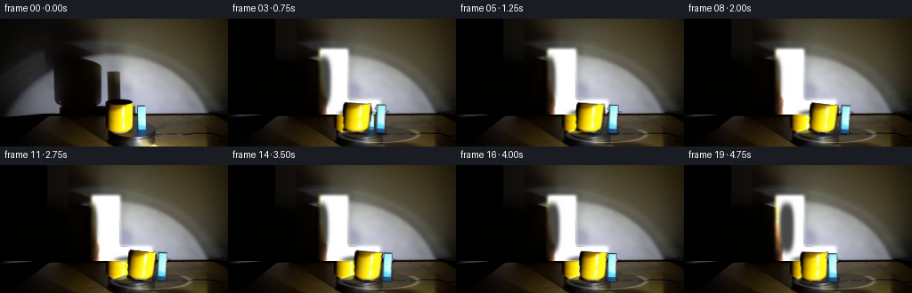
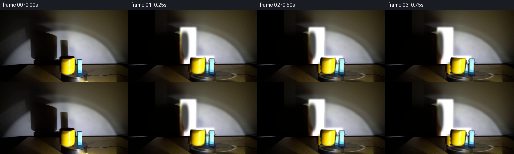

CODING AGENTS AS PIXEL WORLD MODELS
traex/DeepSeek-V4.1-Flash · 0080
点击播放 · 原生 RGB 像素
此结果可播放，但该运行尚未通过最终提交审核。页面展示不代表评测通过。
逐轮保存的候选
回放视频、检查图与代码变化。
每份候选均可单独播放。实际图片检查记录在下方工具轨迹中。
候选 01播放与检查图
点击播放 · 原生 RGB 像素


展开代码变化
--- 上一保存版本
+++ 本次保存版本
@@ -0,0 +1,315 @@
+from pathlib import Path
+
+import cv2
+import numpy as np
+from PIL import Image
+from scipy.ndimage import gaussian_filter
+
+import artifact_io
+
+
+CASE_DIR = Path(__file__).resolve().parent
+W, H, N = 256, 144, 20
+
+
+def smoothstep(edge0, edge1, value):
+ t = np.clip((value - edge0) / (edge1 - edge0), 0.0, 1.0)
+ return t * t * (3.0 - 2.0 * t)
+
+
+def clean_background(frame):
+ """Reconstruct the wall behind the reference objects and their shadows."""
+ image = frame.astype(np.float32)
+ y, x = np.mgrid[:H, :W]
+ objects = (x >= 111) & (x < 171) & (y >= 91) & (y < 137)
+ old_shadows = ((x < 76) & (y < 110)) | (
+ (x >= 103) & (x < 135) & (y >= 34) & (y < 109)
+ )
+ valid = (y < 107) & ~objects & ~old_shadows
+
+ sigma = 12.0
+ denominator = gaussian_filter(valid.astype(np.float32), sigma)
+ numerator = np.stack(
+ [gaussian_filter(image[:, :, c] * valid, sigma) for c in range(3)], axis=2
+ )
+ smooth = numerator / np.maximum(denominator[:, :, None], 1e-5)
+
+ # Complete the dim left side with the wall's broad illumination falloff.
+ xn = (x - 170.0) / 80.0
+ yn = (y - 50.0) / 50.0
+ terms = [xn**i * yn**j for i in range(5) for j in range(5 - i)]
+ design = np.stack([term.ravel() for term in terms], axis=1)
+ fit_mask = valid & (x >= 125)
+ log_gray = np.log(np.maximum(image.mean(axis=2), 1.0))
+ weights = fit_mask.copy()
+ for _ in range(7):
+ indices = weights.ravel()
+ coefficients = np.linalg.lstsq(
+ design[indices], log_gray.ravel()[indices], rcond=None
+ )[0]
+ fitted = np.exp((design @ coefficients).reshape(H, W))
+ residual = log_gray - np.log(np.maximum(fitted, 1.0))
+ weights = fit_mask & (np.abs(residual) < 0.22)
+ tint = np.array([1.0, 0.99, 0.95], dtype=np.float32)
+ fitted_rgb = fitted[:, :, None] * tint
+ smooth = np.where(
+ denominator[:, :, None] < 0.03, fitted_rgb, smooth
+ )
+
+ # Reuse matching wall texture from the right side, corrected for falloff.
+ shift = 100
+ source = np.roll(image, shift, axis=1)
+ source_falloff = np.roll(smooth, shift, axis=1)
+ replacement = source * smooth / np.maximum(source_falloff, 1.0)
+ replacement = np.clip(replacement, 0.0, 255.0)
+
+ mask = (objects | old_shadows).astype(np.float32)
+ mask = np.clip(gaussian_filter(mask, 1.8) * 1.2, 0.0, 1.0)
+ mask[y >= 108] = 0.0
+ background = image * (1.0 - mask[:, :, None]) + replacement * mask[:, :, None]
+ return np.clip(background, 0.0, 255.0)
+
+
+def extract_objects(frame, background):
+ image = frame.astype(np.float32)
+ y, x = np.mgrid[:H, :W]
+
+ mug_region = (x >= 115) & (x <= 151) & (y >= 94) & (y <= 129)
+ mug_color = (
+ (image[:, :, 0] > 45)
+ & (image[:, :, 1] > 30)
+ & (image[:, :, 0] > image[:, :, 2] * 1.5 + 5)
+ )
+ mug_mask = mug_region & mug_color
+ # Keep the dark left wall of the mug, but not the large wall shadow.
+ mug_mask |= (
+ (x >= 118)
+ & (x <= 149)
+ & (y >= 96)
+ & (y <= 127)
+ & (image.mean(axis=2) < 32)
+ & (x > 116 + (y - 96) * 0.13)
+ )
+ mug_mask = cv2.morphologyEx(
+ mug_mask.astype(np.uint8), cv2.MORPH_CLOSE, np.ones((3, 3), np.uint8)
+ ).astype(bool)
+ mug_mask = cv2.morphologyEx(
+ mug_mask.astype(np.uint8), cv2.MORPH_OPEN, np.ones((2, 2), np.uint8)
+ ).astype(bool)
+
+ block_region = (x >= 151) & (x <= 168) & (y >= 95) & (y <= 129)
+ cyan = (
+ block_region
+ & (image[:, :, 1] > 55)
+ & (image[:, :, 2] > 60)
+ & (image[:, :, 2] > image[:, :, 0] * 1.15)
+ )
+ block_body = (
+ (x >= 153)
+ & (x <= 164)
+ & (y >= 99)
+ & (y <= 127)
+ & ~((image[:, :, 0] > 80) & (image[:, :, 1] > 80))
+ )
+ block_mask = cyan | block_body
+ block_mask = cv2.morphologyEx(
+ block_mask.astype(np.uint8), cv2.MORPH_CLOSE, np.ones((3, 3), np.uint8)
+ ).astype(bool)
+
+ # Tiny outlines are part of the photographed objects.
+ mug_mask &= ~((x < 118) | (x > 151) | (y < 94) | (y > 129))
+ block_mask &= ~((x < 151) | (x > 168) | (y < 95) | (y > 129))
+
+ def layer(mask, center):
+ alpha = gaussian_filter(mask.astype(np.float32), 0.48)
+ alpha = np.clip((alpha - 0.10) * 1.35, 0.0, 1.0)
+ color = image - background
+ # The source layer is treated as emitted color rather than a difference.
+ color = np.where(mask[:, :, None], image, color)
+ return color, alpha
+
+ mug = layer(mug_mask, (134.0, 112.0))
+ block = layer(block_mask, (158.0, 112.0))
+ return mug, block
+
+
+def shift_layer(layer, dx, dy):
+ color, alpha = layer
+ matrix = np.float32([[1, 0, dx], [0, 1, dy]])
+ moved_color = cv2.warpAffine(
+ color, matrix, (W, H), flags=cv2.INTER_LINEAR, borderValue=0
+ )
+ moved_alpha = cv2.warpAffine(
+ alpha, matrix, (W, H), flags=cv2.INTER_LINEAR, borderValue=0
+ )
+ return moved_color, moved_alpha
+
+
+def transform_layer(layer, angle, center):
+ color, alpha = layer
+ matrix = cv2.getRotationMatrix2D(center, angle, 1.0)
+ moved_color = cv2.warpAffine(
+ color, matrix, (W, H), flags=cv2.INTER_LINEAR, borderValue=0
+ )
+ moved_alpha = cv2.warpAffine(
+ alpha, matrix, (W, H), flags=cv2.INTER_LINEAR, borderValue=0
+ )
+ return moved_color, moved_alpha
+
+
+def composite(image, layer, opacity=1.0):
+ color, alpha = layer
+ a = alpha[:, :, None] * opacity
+ return image * (1.0 - a) + color * a
+
+
+def wall_ellipse(canvas, cx, cy, rx, ry, strength, color):
+ y, x = np.mgrid[:H, :W]
+ radius = np.sqrt(((x - cx) / max(rx, 1)) ** 2 + ((y - cy) / max(ry, 1)) ** 2)
+ mask = (1.0 - smoothstep(0.62, 1.04, radius)) * (y < 108)
+ mask = gaussian_filter(mask, 1.25)
+ return canvas * (1.0 - mask[:, :, None] * strength) + color * (
+ mask[:, :, None] * strength
+ )
+
+
+def wall_shadow(canvas, cx, cy, width, height, strength):
+ y, x = np.mgrid[:H, :W]
+ # Shadow edges are soft on the left and terminate sharply at the wall base.
+ nx = (x - cx) / max(width, 1.0)
+ ny = (y - cy) / max(height, 1.0)
+ q = np.abs(nx) ** 3 + np.abs(ny) ** 3
+ mask = 1.0 - smoothstep(0.72, 1.05, q ** (1.0 / 3.0))
+ mask *= smoothstep(0.0, 4.0, 109.0 - y)
+ mask = gaussian_filter(mask, 1.6)
+ color = np.array([1.5, 1.1, 0.5], dtype=np.float32)
+ return canvas * (1.0 - mask[:, :, None] * strength) + color * (
+ mask[:, :, None] * strength
+ )
+
+
+def platform_shadow(canvas, x, y, width, height, strength=0.78):
+ yy, xx = np.mgrid[:H, :W]
+ q = ((xx - x) / width) ** 2 + ((yy - y) / height) ** 2
+ mask = 1.0 - smoothstep(0.25, 1.0, q)
+ mask *= (yy >= 123)
+ mask = gaussian_filter(mask, 1.25)
+ color = np.array([8.0, 7.0, 5.0], dtype=np.float32)
+ return canvas * (1.0 - mask[:, :, None] * strength) + color * (
+ mask[:, :, None] * strength
+ )
+
+
+def make_turntable(frame):
+ # The platform's visible top is a dark ellipse centered around (169, 130).
+ y, x = np.mgrid[:H, :W]
+ q = ((x - 169.0) / 44.0) ** 2 + ((y - 130.0) / 9.0) ** 2
+ mask = np.clip((1.0 - q) * 10.0, 0.0, 1.0)
+ top = 1.0 - mask
+ rim = np.exp(-((q - 1.0) / 0.13) ** 2)
+ rim *= y >= 125
+ body = (y >= 128) & (q < 1.15)
+ texture = frame.astype(np.float32).copy()
+ base = np.array([42.0, 41.0, 41.0], dtype=np.float32)
+ canvas = texture
+ canvas = canvas * (1.0 - 0.42 * mask[:, :, None]) + base * (
+ 0.42 * mask[:, :, None]
+ )
+ canvas += rim[:, :, None] * np.array([48.0, 47.0, 46.0], dtype=np.float32)
+ return np.clip(canvas, 0.0, 255.0)
+
+
+def add_contact_shadow(canvas, cx, cy, rx, ry, strength=0.70):
+ y, x = np.mgrid[:H, :W]
+ q = ((x - cx) / rx) ** 2 + ((y - cy) / ry) ** 2
+ mask = (1.0 - smoothstep(0.3, 1.0, q)) * (y >= 123)
+ mask = gaussian_filter(mask, 0.8)
+ return canvas * (1.0 - mask[:, :, None] * strength)
+
+
+def main():
+ first = np.asarray(Image.open(CASE_DIR / "first_frame.png").convert("RGB"))
+ background = clean_background(first)
+ mug = extract_objects(first, background)[0]
+ block = extract_objects(first, background)[1]
+
+ frames = [first.copy()]
+ for index in range(1, N):
+ phase = 2.0 * np.pi * index / (N - 1) * 0.42
+ # Orbit the two objects together clockwise. Screen-space depth changes
+ # their apparent size and vertical position slightly.
+ mug_x = 134.0 + 24.0 * np.sin(phase)
+ mug_y = 112.0 - 1.6 * np.cos(phase)
+ block_x = 158.0 + 23.0 * np.sin(phase + 0.16)
+ block_y = 112.0 - 1.5 * np.cos(phase + 0.16)
+
+ canvas = background.copy()
+ # Turntable and its broad cast shadow are rebuilt for each position.
+ canvas = platform_shadow(
+ canvas,
+ 174.0 + 5.0 * np.sin(phase + 0.4),
+ 143.5,
+ 48.0,
+ 7.0,
+ 0.72,
+ )
+ canvas = make_turntable(canvas)
+
+ # Wall shadows move opposite to the objects and stretch with distance.
+ canvas = wall_shadow(
+ canvas,
+ 70.0 - 25.0 * np.sin(phase + 0.12),
+ 76.0,
+ 36.0 + 5.0 * abs(np.sin(phase)),
+ 34.0,
+ 0.92,
+ )
+ canvas = wall_shadow(
+ canvas,
+ 119.0 - 19.0 * np.sin(phase + 0.28),
+ 70.0,
+ 9.0,
+ 31.0,
+ 0.72,
+ )
+ canvas = wall_ellipse(
+ canvas,
+ 138.0 + 12.0 * np.sin(phase + 0.2),
+ 106.0,
+ 25.0,
+ 5.0,
+ 0.54,
+ np.array([2.0, 2.0, 1.0], dtype=np.float32),
+ )
+
+ # Contact darkening makes the pieces read as sitting on the platform.
+ canvas = add_contact_shadow(canvas, block_x + 1.0, 128.5, 8.0, 2.4, 0.7)
+ canvas = add_contact_shadow(canvas, mug_x, 128.5, 17.0, 3.0, 0.65)
+
+ # Vertical blocks in the reference show their broad face; preserve that
+ # look while yawing gently so the orbit has a clear rotational cue.
+ mug_angle = -7.0 * np.sin(phase + 0.2)
+ block_angle = -5.0 * np.sin(phase + 0.4)
+ mug_layer = transform_layer(mug, mug_angle, (134.0, 112.0))
+ block_layer = transform_layer(block, block_angle, (158.0, 112.0))
+ mug_layer = shift_layer(mug_layer, mug_x - 134.0, mug_y - 112.0)
+ block_layer = shift_layer(block_layer, block_x - 158.0, block_y - 112.0)
+
+ # Slight depth ordering keeps the mug in front when the pair crosses.
+ if np.sin(phase) < -0.15:
+ canvas = composite(canvas, block_layer)
+ canvas = composite(canvas, mug_layer)
+ else:
+ canvas = composite(canvas, mug_layer)
+ canvas = composite(canvas, block_layer)
+
+ # Keep the tabletop and wall boundary photographic and stable.
+ frames.append(np.uint8(np.clip(canvas, 0.0, 255.0)))
+
+ frames = np.asarray(frames, dtype=np.uint8)
+ frames[0] = first
+ artifact_io.save(frames, CASE_DIR)
+
+
+if __name__ == "__main__":
+ main()
可观测工具轨迹
实际执行的命令与返回图片。
命令 1exit 0
/bin/bash -c "pwd && rg --files -g '"'!*.pyc'"' -g '"'!__pycache__'"' | sed -n '1,160p'"
命令 2exit 0
/bin/bash -c "sed -n '1,240p' prompt.txt"
命令 3exit 0
/bin/bash -c "sed -n '1,280p' GENERATION_RULES.md"
命令 4exit 0
/bin/bash -c 'ls -la && file first_frame.png && identify first_frame.png 2>/dev/null || true'
命令 5exit 0
/bin/bash -c "sed -n '1,260p' artifact_io.py"
命令 6exit 0
/bin/bash -c "python - <<'PY' import importlib.util for m in ['numpy','PIL','cv2','scipy','matplotlib','imageio','skimage','torch']: print(m, bool(importlib.util.find_spec(m))) PY"
命令 7exit 0
/bin/bash -c "python - <<'PY'
from PIL import Image
import numpy as np
im=np.asarray(Image.open('first_frame.png').convert('RGB'))
print(im.shape)
# selected row/column values, identify key regions
for y in [0,20,40,60,80,100,110,120,130,140]:
print('row',y, [(x,tuple(im[y,x])) for x in [0,20,50,100,150,190,220,250]])
PY"命令 8exit 0
/bin/bash -c "python - <<'PY'
from PIL import Image
im=Image.open('first_frame.png')
im.resize((1024,576), Image.Resampling.NEAREST).save('.tmp/enlarged.png')
PY"命令 9exit 0
/bin/bash -c "python - <<'PY'
from PIL import Image
im=Image.open('first_frame.png')
im.crop((100,80,210,144)).resize((880,512), Image.Resampling.NEAREST).save('.tmp/objects.png')
PY"命令 10exit 0
/bin/bash -c "python - <<'PY'
import cv2, numpy as np
from PIL import Image
im=np.asarray(Image.open('first_frame.png').convert('RGB'))
r,g,b=im[:,:,0],im[:,:,1],im[:,:,2]
for name,m in [('yellow',(r>80)&(g>50)&(b<55)&(r>g)),('cyan',(b>55)&(g>55)&(r<65)&(b>r*1.2)),('darkwall',(r<25)&(g<25)&(b<25))]:
ys,xs=np.where(m)
print(name, len(xs), (xs.min(),ys.min(),xs.max(),ys.max()) if len(xs) else None)
n,lab,stats,cen=cv2.connectedComponentsWithStats(m.astype('uint8'),8)
print(sorted(stats[1:].tolist(), key=lambda s:s[4], reverse=True)[:5])
PY"命令 11exit 0
/bin/bash -c "python - <<'PY'
from PIL import Image
import numpy as np
im=np.asarray(Image.open('first_frame.png').convert('RGB'))
g=im.mean(2)
# coarse grid average grayscale
for y in range(0,144,8):
print(f'{y:3d}', ' '.join(f'{g[y:y+8,x:x+8].mean():3.0f}' for x in range(0,256,8)))
PY"命令 12exit 0
/bin/bash -c "python - <<'PY'
from PIL import Image
im=Image.open('first_frame.png')
# crop wall shadow only
im.crop((0,0,150,115)).resize((900,690), Image.Resampling.NEAREST).save('.tmp/wall.png')
PY"命令 13exit 0
/bin/bash -c "python - <<'PY'
from PIL import Image
import numpy as np
im=np.asarray(Image.open('first_frame.png').convert('RGB'))
for y in [122,124,126,128,130,132,134,136,138,140,142,143]:
row=im[y]
print('\\ny',y)
# print runs of quantized gray > thresholds
g=row.mean(1)
for lo,hi in [(0,20),(20,40),(40,80),(80,140),(140,255)]:
m=(g>=lo)&(g<hi)
# runs >2
d=np.diff(np.r_[False,m,False].astype(int)); starts=np.where(d==1)[0]; ends=np.where(d==-1)[0]
runs=[(int(a),int(b-1)) for a,b in zip(starts,ends) if b-a>=2]
print(lo,hi,runs[:12])
PY"命令 14exit 0
/bin/bash -c "python - <<'PY'
from PIL import Image
import numpy as np
im=np.asarray(Image.open('first_frame.png').convert('RGB'))
# identify exact palette top colors
a,c=np.unique(im.reshape(-1,3),axis=0,return_counts=True)
for i in np.argsort(c)[-30:][::-1]: print(tuple(a[i]),c[i])
PY"命令 15exit 0
/bin/bash -c "python - <<'PY'
import cv2, numpy as np
from PIL import Image
im=np.asarray(Image.open('first_frame.png').convert('RGB'))
g=im.mean(2)
for t in [5,8,10,12,15,20,25,30]:
m=((g<t)&(np.indices(g.shape)[0]<108)).astype('uint8')
n,l,s,c=cv2.connectedComponentsWithStats(m,8)
comps=sorted(s[1:].tolist(), key=lambda z:z[4],reverse=True)[:5]
print(t,comps)
PY"命令 16exit 0
/bin/bash -c "python - <<'PY'
from PIL import Image
import numpy as np
im=np.asarray(Image.open('first_frame.png').convert('RGB'))
for y in range(105,144,2):
g=im[y].mean(1)
print(y, ' '.join(f'{g[x:x+4].mean():3.0f}' for x in range(0,256,4)))
PY"命令 17exit 0
/bin/bash -c "python - <<'PY'
import cv2, numpy as np
from PIL import Image
im=np.asarray(Image.open('first_frame.png').convert('RGB'))
# Fit broad wall illumination from non-object, non-shadow candidate samples y<108.
y,x=np.indices(im.shape[:2]); gray=im.mean(2)
mask=(y<104)&~((x>45)&(x<132)&(y>20)) # exclude likely shadow band
# exclude object right-side etc
mask &= ~((x>145)&(y>85))
# Fit elliptical gaussian plus plane: log(max(gray-1,1)) ~ a + bx + cy + d x2 + e y2
X=x[mask].astype(float);Y=y[mask].astype(float);Z=np.log(np.maximum(gray[mask],1.0))
A=np.c_[np.ones(len(X)),X,Y,X*X,Y*Y,X*Y]
coef=np.linalg.lstsq(A,Z,rcond=None)[0]
pred=np.exp(np.c_[np.ones(x.size),x.ravel(),y.ravel(),(x*x).ravel(),(y*y).ravel(),(x*y).ravel()]@coef).reshape(im.shape[:2])
print('coef',coef)
for yy in [20,50,80,100]: print(yy,[round(pred[yy,xx],1) for xx in [10,50,90,130,170,210,250]])
PY"命令 18exit 0
/bin/bash -c "python - <<'PY'
from PIL import Image
import numpy as np
im=np.asarray(Image.open('first_frame.png').convert('RGB')).astype(float)
g=im.mean(2)
# For each row, print left/right edge of wall light threshold > 20 excluding obvious objects
for y in range(15,105,5):
m=g[y]>20
# segments
d=np.diff(np.r_[False,m,False].astype(int)); st=np.where(d==1)[0]; en=np.where(d==-1)[0]
runs=[(int(a),int(b-1)) for a,b in zip(st,en) if b-a>=3]
print(y,runs)
PY"命令 19exit 0
/bin/bash -c "python - <<'PY'
from PIL import Image
im=Image.open('first_frame.png')
im.crop((112,86,173,136)).resize((976,800), Image.Resampling.NEAREST).save('.tmp/objects_close.png')
PY"命令 20exit 0
/bin/bash -c "python - <<'PY'
from PIL import Image
import numpy as np
im=np.asarray(Image.open('first_frame.png').convert('RGB'))
# print RGB selected mug x range by row
for y in [94,96,98,100,102,104,106,108,110,112,114,116,118,120,122,124,126,128,130,132,134,136,138,140,142]:
print('\\ny',y)
for x in range(116,170,4): print(x,tuple(im[y,x]),end='; ')
PY"命令 21exit 0
/bin/bash -c "python - <<'PY'
from PIL import Image
import numpy as np
im=np.asarray(Image.open('first_frame.png').convert('RGB'))
# Estimate wall pixels from center row, print RGB at x every 5
for y in [40,60,80,100,104]:
print('y',y)
for x in range(120,256,10): print(x,tuple(im[y,x]),end=';')
print()
PY"命令 22exit 1
/bin/bash -c "python - <<'PY'
import numpy as np, cv2
from PIL import Image
from scipy.ndimage import gaussian_filter
im=np.asarray(Image.open('first_frame.png').convert('RGB')).astype(float)
h,w=im.shape[:2]
y,x=np.mgrid[:h,:w]
# normalized coords and polynomial degree 5
xn=(x-w/2)/(w/2); yn=(y-54)/54
terms=[]
for i in range(6):
for j in range(6-i):
terms.append(xn**i*yn**j)
A=np.stack([t.ravel() for t in terms],1)
wall=(y<108)
obj=((x>=113)&(x<168)&(y>=92)&(y<132))
shadow=((x<72)&(y<109))|((x>=106)&(x<134)&(y>=38)&(y<108))
valid=wall&~obj&~shadow
# exclude low dark maybe not
preds=np.zeros_like(im)
for c in range(3):
z=np.log(np.maximum(im[:,:,c],1.0))
ww=valid.astype(float)
coef=None
for it in range(6):
coef=np.linalg.lstsq(A[ww.ravel()>0],z[ww.ravel()>0],rcond=None)[0]
pred=(A@coef).reshape(h,w)
resid=z-pred
# ignore shadow-like underprediction, outlier specular
ww=valid & (resid>-0.13) & (resid<0.35)
if it>0: ww &= ~((x>140)&(x<155)&(y>55)&(y<75)&(np.abs(resid)<2)) # no-op
ww=ww.astype(float)
preds[:,:,c]=np.exp((A@coef).reshape(h,w))
# blend color texture? save
bg=im.copy()
feather=np.zeros((h,w),np.float32)
# masks to replace
mr=((x<72)&(y<109))|((x>=106)&(x<134)&(y>=38)&(y<108))|obj
feather=gaussian_filter(mr.astype(float),2.0)
feather=np.clip(feather*1.2,0,1)
for c in range(3): bg[:,:,c]=im[:,:,c]*(1-feather)+np.clip(preds[:,:,c],0,255)*feather
# table stays original, just replace wall zone only
bg[108:]=im[108:]
Image.fromarray(np.uint8(np.clip(bg,0,255))).save('.tmp/bgtest.png')
Image.fromarray(np.uint8(np.clip(preds,0,255))).save('.tmp/wallpred.png')
# print fit errors valid
print('gray samples',valid.sum())
print('pred samples',[(xx,yy,np.round(preds[yy,xx]).astype(int)) for yy,xx in [(0,0),(50,0),(50,50),(50,100),(50,150),(50,200),(50,250),(100,50),(100,150),(100,220)]])
PY"命令 23exit 0
/bin/bash -c "python - <<'PY'
import numpy as np
from PIL import Image
from scipy.ndimage import gaussian_filter
im=np.asarray(Image.open('first_frame.png').convert('RGB')).astype(float)
h,w=im.shape[:2]; y,x=np.mgrid[:h,:w]
xn=(x-w/2)/(w/2); yn=(y-54)/54
terms=[xn**i*yn**j for i in range(6) for j in range(6-i)]
A=np.stack([t.ravel() for t in terms],1)
wall=(y<108); obj=((x>=113)&(x<168)&(y>=92)&(y<132)); shadow=((x<72)&(y<109))|((x>=106)&(x<134)&(y>=38)&(y<108))
valid=wall&~obj&~shadow
preds=np.zeros_like(im)
for c in range(3):
z=np.log(np.maximum(im[:,:,c],1.0)); ww=valid.copy()
for it in range(8):
idx=ww.ravel(); coef=np.linalg.lstsq(A[idx],z.ravel()[idx],rcond=None)[0]
pred=(A@coef).reshape(h,w); resid=z-pred
ww=valid & (resid>-0.13) & (resid<0.35)
preds[:,:,c]=np.exp(pred)
feather=gaussian_filter((shadow|obj).astype(float),2.0)
feather=np.clip(feather*1.25,0,1); feather[y>=108]=0
bg=im.copy()
for c in range(3): bg[:,:,c]=im[:,:,c]*(1-feather)+np.clip(preds[:,:,c],0,255)*feather
Image.fromarray(np.uint8(np.clip(bg,0,255))).save('.tmp/bgtest.png')
Image.fromarray(np.uint8(np.clip(preds,0,255))).save('.tmp/wallpred.png')
print('valid',valid.sum())
for yy,xx in [(0,0),(50,0),(50,50),(50,100),(50,150),(50,200),(50,250),(100,50),(100,150),(100,220)]: print(xx,yy,np.round(preds[yy,xx]).astype(int))
PY"命令 24exit 0
/bin/bash -c "python - <<'PY'
import numpy as np
from PIL import Image
from scipy.ndimage import gaussian_filter
im=np.asarray(Image.open('first_frame.png').convert('RGB')).astype(float); h,w=im.shape[:2]; y,x=np.mgrid[:h,:w]
obj=((x>=113)&(x<168)&(y>=92)&(y<132)); shadows=((x<72)&(y<109))|((x>=106)&(x<134)&(y>=38)&(y<108)); valid=(y<107)&~obj&~shadows
# exclude likely boundary/dark unexplained? use x>80 initially, plus edge rows 0:20 right
valid &= (x>82)
preds=np.zeros_like(im)
for deg in [3,4]:
xn=(x-150)/100; yn=(y-55)/55
terms=[xn**i*yn**j for i in range(deg+1) for j in range(deg+1-i)]
A=np.stack([t.ravel() for t in terms],1); print('deg',deg,'terms',len(terms))
for c in range(3):
z=np.log(np.maximum(im[:,:,c],1)); ww=valid.copy()
for it in range(8):
idx=ww.ravel(); coef=np.linalg.lstsq(A[idx],z.ravel()[idx],rcond=None)[0]; pred=(A@coef).reshape(h,w); resid=z-pred
ww=valid&(resid>-0.15)&(resid<0.25)
preds[:,:,c]=np.exp(pred)
print('valid',valid.sum())
for yy,xx in [(0,0),(50,0),(50,50),(50,100),(50,150),(50,200),(50,250),(100,50),(100,150),(100,220)]: print(xx,yy,np.round(preds[yy,xx]).astype(int))
feather=gaussian_filter((shadows|obj).astype(float),2.0); feather=np.clip(feather*1.25,0,1); feather[y>=108]=0
bg=im.copy()
for c in range(3): bg[:,:,c]=im[:,:,c]*(1-feather)+np.clip(preds[:,:,c],0,255)*feather
Image.fromarray(np.uint8(np.clip(bg,0,255))).save('.tmp/bgtest2.png'); Image.fromarray(np.uint8(np.clip(preds,0,255))).save('.tmp/wallpred2.png')
PY"命令 25exit 0
/bin/bash -c "python - <<'PY'
import numpy as np
from PIL import Image
from scipy.ndimage import gaussian_filter, map_coordinates
im=np.asarray(Image.open('first_frame.png').convert('RGB')).astype(float); h,w=im.shape[:2]; y,x=np.mgrid[:h,:w]
obj=((x>=112)&(x<170)&(y>=92)&(y<136)); shadows=((x<75)&(y<110))|((x>=104)&(x<134)&(y>=35)&(y<108)); valid=(y<107)&~obj&~shadows
# candidate valid bright wall samples; fit each channel in linear space with radial basis gaussian smooth spline perhaps use scipy griddata RBF too much.
# Estimate via strong smoothing normalized convolution of valid pixels, plus extension via harmonic-ish iterative diffusion.
sigma=12.0
num=np.stack([gaussian_filter(im[:,:,c]*valid,sigma) for c in range(3)],2)
den=gaussian_filter(valid.astype(float),sigma)[...,None]
pred=num/np.maximum(den,1e-6)
# fill low-confidence from surrounding via iterative dilation of valid prediction (which is already broad)
# median local variation retained? smooth small texture from original away from masks later
feather=gaussian_filter((shadows|obj).astype(float),2.2); feather=np.clip(feather*1.25,0,1); feather[y>=108]=0
bg=im.copy()
for c in range(3): bg[:,:,c]=im[:,:,c]*(1-feather)+np.clip(pred[:,:,c],0,255)*feather
Image.fromarray(np.uint8(np.clip(bg,0,255))).save('.tmp/bgtest3.png'); Image.fromarray(np.uint8(np.clip(pred,0,255))).save('.tmp/wallpred3.png')
for yy,xx in [(0,0),(50,0),(50,50),(50,100),(50,150),(50,200),(50,250),(100,50),(100,150),(100,220)]: print(xx,yy,np.round(pred[yy,xx]).astype(int))
PY"命令 26exit 0
/bin/bash -c "python - <<'PY'
import numpy as np
from PIL import Image
from scipy.ndimage import gaussian_filter
im=np.asarray(Image.open('first_frame.png').convert('RGB')).astype(float); h,w=im.shape[:2]; y,x=np.mgrid[:h,:w]
obj=((x>=112)&(x<170)&(y>=92)&(y<136)); shadows=((x<75)&(y<110))|((x>=104)&(x<134)&(y>=35)&(y<108)); valid=(y<107)&~obj&~shadows
sigma=12.0
num=np.stack([gaussian_filter(im[:,:,c]*valid,sigma) for c in range(3)],2); den=gaussian_filter(valid.astype(float),sigma)[...,None]; pred=num/np.maximum(den,1e-6)
# outside valid region use analytic fallback fit from current pred samples in unmasked right wall using log-polynomial
xn=(x-200)/80; yn=(y-50)/50
terms=[xn**i*yn**j for i in range(4) for j in range(4-i)]; A=np.stack([t.ravel() for t in terms],1)
# fit only right wall x>=135, y<107 where not object
fitmask=valid&(x>=135)
for c in range(3):
z=np.log(np.maximum(pred[:,:,c],0.5)); ww=fitmask
for it in range(5):
idx=ww.ravel(); coef=np.linalg.lstsq(A[idx],z.ravel()[idx],rcond=None)[0]; p=np.exp((A@coef).reshape(h,w)); resid=z-p; ww=fitmask&(np.abs(resid)<0.2)
pred[:,:,c]=np.where(den[:,:,0]<0.1,np.clip(p,0,255),pred[:,:,c])
# keep original texture outside masks, and use pred only inside masks
feather=gaussian_filter((shadows|obj).astype(float),2.2); feather=np.clip(feather*1.25,0,1); feather[y>=108]=0
bg=im.copy()
for c in range(3): bg[:,:,c]=im[:,:,c]*(1-feather)+np.clip(pred[:,:,c],0,255)*feather
Image.fromarray(np.uint8(np.clip(bg,0,255))).save('.tmp/bgtest4.png'); Image.fromarray(np.uint8(np.clip(pred,0,255))).save('.tmp/wallpred4.png')
for yy,xx in [(0,0),(50,0),(50,50),(50,100),(50,150),(50,200),(50,250),(100,50),(100,150),(100,220)]: print(xx,yy,np.round(pred[yy,xx]).astype(int))
PY"命令 27exit 0
/bin/bash -c "python - <<'PY'
from PIL import Image
import numpy as np
im=np.asarray(Image.open('first_frame.png').convert('RGB')).astype(float)
g=im.mean(2)
# background edge of light and object silhouettes per row
for y in range(106,144,2):
print(y, ' '.join(f'{g[y,x]:3.0f}' for x in range(20,70,2)))
PY"命令 28exit 0
/bin/bash -c "python - <<'PY'
from PIL import Image
import numpy as np
im=np.asarray(Image.open('first_frame.png').convert('RGB')).astype(float)
# Save saturation map to see colors
mx=im.max(2); mn=im.min(2); sat=(mx-mn)/np.maximum(mx,1)
Image.fromarray(np.uint8(np.clip(sat*255*3,0,255))).save('.tmp/sat.png')
PY"命令 29exit 0
/bin/bash -c "python - <<'PY'
from PIL import Image
import numpy as np
im=np.asarray(Image.open('first_frame.png').convert('RGB'))
for y in range(94,134,2):
g=im[y].mean(1)
# runs where >40 around x 110..180
print(y,[(x,round(g[x])) for x in range(112,180) if g[x]>35][:3], [(x,round(g[x])) for x in range(112,180) if g[x]>35][-3:])
PY"命令 30exit 0
/bin/bash -c "python - <<'PY'
import numpy as np
from PIL import Image
im=np.asarray(Image.open('first_frame.png').convert('RGB'))
for y in [94,96,98,100,102,104,106,108,110,112,114,116,118,120,122,124,126,128,130,132,134]:
# identify bright mug yellow pixels and cyan
r,g,b=[im[y,:,i].astype(int) for i in range(3)]
ym=(r>90)&(g>50)&(b<50)&(r>g*1.1)
cm=(b>100)&(g>100)&(b>r*1.2)
print(y,'yellow',np.where(ym)[0].min() if ym.any() else None,np.where(ym)[0].max() if ym.any() else None,'cyan',np.where(cm)[0].min() if cm.any() else None,np.where(cm)[0].max() if cm.any() else None)
PY"命令 31exit 0
/bin/bash -c "python - <<'PY'
from PIL import Image
im=Image.open('first_frame.png')
im.crop((0,100,256,144)).resize((1024,176), Image.Resampling.NEAREST).save('.tmp/table.png')
PY"命令 32exit 0
/bin/bash -c "python - <<'PY'
from PIL import Image
im=Image.open('first_frame.png')
im.crop((130,118,245,144)).resize((920,208), Image.Resampling.NEAREST).save('.tmp/platform.png')
PY"命令 33exit 0
/bin/bash -c "python - <<'PY'
from PIL import Image
import numpy as np
im=np.asarray(Image.open('first_frame.png').convert('RGB')).astype(float)
for y in range(128,144):
print(y,[(x,tuple(im[y,x].astype(int))) for x in [138,142,146,150,154,158,162,166,170,174,178,182,186,190]])
PY"命令 34exit 0
/bin/bash -c "python - <<'PY'
import numpy as np, cv2
from PIL import Image
im=np.asarray(Image.open('first_frame.png').convert('RGB'))
# Detect bright rim highlights pixels in bottom-right, print skeleton coordinates by row
for y in range(128,144):
row=im[y]; mask=(row.mean(1)>140)&(np.arange(256)>130)
print(y,np.where(mask)[0].tolist())
PY"命令 35exit 0
/bin/bash -c "python - <<'PY'
import numpy as np
from PIL import Image
from scipy.ndimage import gaussian_filter
im=np.asarray(Image.open('first_frame.png').convert('RGB')).astype(float); h,w=im.shape[:2]; y,x=np.mgrid[:h,:w]
obj=((x>=112)&(x<170)&(y>=92)&(y<136)); shadows=((x<75)&(y<110))|((x>=104)&(x<134)&(y>=35)&(y<108)); valid=(y<107)&~obj&~shadows
sigma=12.0
num=np.stack([gaussian_filter(im[:,:,c]*valid,sigma) for c in range(3)],2); den=gaussian_filter(valid.astype(float),sigma)[...,None]; pred=num/np.maximum(den,1e-6)
# use color sample from x=145,y=95 wall baseline, estimated relative color ratio? diffuse model
# Fill exact known baseline values through polynomial log fit in region x>135 and y<107
xn=(x-200)/80; yn=(y-50)/50; terms=[xn**i*yn**j for i in range(4) for j in range(4-i)]; A=np.stack([t.ravel() for t in terms],1)
fitmask=valid&(x>=135)
for c in range(3):
z=np.log(np.maximum(pred[:,:,c],0.5)); ww=fitmask.copy()
for it in range(5):
idx=ww.ravel(); coef=np.linalg.lstsq(A[idx],z.ravel()[idx],rcond=None)[0]; p=np.exp((A@coef).reshape(h,w)); resid=z-p; ww=fitmask&(np.abs(resid)<0.2)
# blend fallback where confidence low, but ensure dark left stays dark using polynomial itself.
pred[:,:,c]=np.where(den[:,:,0]<0.06,np.clip(p,0,255),pred[:,:,c])
# add fine paper texture in masked region based on original high-freq? We'll preserve original texture outside mask and use background estimated, plus original texture
feather=gaussian_filter((shadows|obj).astype(float),2.2); feather=np.clip(feather*1.25,0,1); feather[y>=108]=0
bg=im.copy()
for c in range(3): bg[:,:,c]=im[:,:,c]*(1-feather)+np.clip(pred[:,:,c],0,255)*feather
Image.fromarray(np.uint8(np.clip(bg,0,255))).save('.tmp/bgtest5.png'); Image.fromarray(np.uint8(np.clip(pred,0,255))).save('.tmp/wallpred5.png')
print('done')
PY"命令 36exit 0
/bin/bash -c "python - <<'PY'
import numpy as np
from PIL import Image
from scipy.ndimage import gaussian_filter
im=np.asarray(Image.open('first_frame.png').convert('RGB')).astype(float); h,w=im.shape[:2]; y,x=np.mgrid[:h,:w]
obj=((x>=112)&(x<170)&(y>=92)&(y<136)); shadows=((x<75)&(y<110))|((x>=104)&(x<134)&(y>=35)&(y<108)); valid=(y<107)&~obj&~shadows
sigma=12.0
num=np.stack([gaussian_filter(im[:,:,c]*valid,sigma) for c in range(3)],2); den=gaussian_filter(valid.astype(float),sigma)[...,None]; pred=num/np.maximum(den,1e-6)
# bilinear fit local residual texture: original - pred in valid wall region, smooth fill of texture with gaussian sigma 4
tex=np.stack([gaussian_filter((im[:,:,c]-pred[:,:,c])*valid,4) for c in range(3)],2)/np.maximum(gaussian_filter(valid.astype(float),4)[...,None],1e-6)
# scaled low texture only, plus per-pixel fine noise generated from local patch. Start with target pred+texture for hidden masks
pred=np.clip(pred+tex*0.6,0,255)
feather=gaussian_filter((shadows|obj).astype(float),2.2); feather=np.clip(feather*1.25,0,1); feather[y>=108]=0
bg=im.copy()
for c in range(3): bg[:,:,c]=im[:,:,c]*(1-feather)+np.clip(pred[:,:,c],0,255)*feather
Image.fromarray(np.uint8(np.clip(bg,0,255))).save('.tmp/bgtest6.png')
PY"命令 37exit 0
/bin/bash -c "python - <<'PY'
import numpy as np
from PIL import Image
from scipy.ndimage import gaussian_filter
im=np.asarray(Image.open('first_frame.png').convert('RGB')).astype(float); h,w=im.shape[:2]; y,x=np.mgrid[:h,:w]
obj=((x>=112)&(x<170)&(y>=92)&(y<136)); shadows=((x<75)&(y<110))|((x>=104)&(x<134)&(y>=35)&(y<108)); valid=(y<107)&~obj&~shadows
# masked normalized convolution at several scales then use highest confidence
sigma=10.0
num=np.stack([gaussian_filter(im[:,:,c]*valid,sigma) for c in range(3)],2); den=gaussian_filter(valid.astype(float),sigma)[...,None]; pred=num/np.maximum(den,1e-6)
# For low confidence, blend with smooth polynomial fit in log gray only, then color tint from nearest bright wall
xn=(x-170)/80; yn=(y-50)/50; terms=[xn**i*yn**j for i in range(5) for j in range(5-i)]; A=np.stack([t.ravel() for t in terms],1)
fitmask=valid&(x>=125)
z=np.log(np.maximum(im.mean(2),1)); ww=fitmask.copy()
for it in range(8):
idx=ww.ravel(); coef=np.linalg.lstsq(A[idx],z.ravel()[idx],rcond=None)[0]; pg=np.exp((A@coef).reshape(h,w)); resid=z-pg; ww=fitmask&(np.abs(resid)<0.22)
print('coef residual')
tint=np.array([1.0,0.99,0.94])
predg=pg[...,None]*tint
pred=np.where(den<0.03,predg,pred)
# Fine texture preserve via original valid noise? random low-amplitude paper texture from upper right normalized convolution
tex=im-pred
tnum=np.stack([gaussian_filter(tex[:,:,c]*valid,3) for c in range(3)],2); tden=gaussian_filter(valid.astype(float),3)[...,None]
pred=np.clip(pred+tnum/np.maximum(tden,1e-6)*0.5,0,255)
feather=gaussian_filter((shadows|obj).astype(float),2.2); feather=np.clip(feather*1.25,0,1); feather[y>=108]=0
bg=im.copy()
for c in range(3): bg[:,:,c]=im[:,:,c]*(1-feather)+np.clip(pred[:,:,c],0,255)*feather
Image.fromarray(np.uint8(np.clip(bg,0,255))).save('.tmp/bgtest7.png'); Image.fromarray(np.uint8(np.clip(pred,0,255))).save('.tmp/wallpred7.png')
PY"命令 38exit 0
/bin/bash -c "python - <<'PY'
import numpy as np
from PIL import Image
from scipy.ndimage import gaussian_filter
im=np.asarray(Image.open('first_frame.png').convert('RGB')).astype(float); h,w=im.shape[:2]; y,x=np.mgrid[:h,:w]
obj=((x>=112)&(x<170)&(y>=92)&(y<136)); shadows=((x<75)&(y<110))|((x>=104)&(x<134)&(y>=35)&(y<108)); valid=(y<107)&~obj&~shadows
# Inpaint horizontal stripe shadows by copying wall texture from x+110 right where same y, preserving illumination scale from smooth fit.
sigma=12.; den=gaussian_filter(valid.astype(float),sigma)
num=np.stack([gaussian_filter(im[:,:,c]*valid,sigma) for c in range(3)],2); pred=num/np.maximum(den[...,None],1e-6)
# Estimate illumination curve per y from predicted right wall via median; but target replacement can use source texture at x+100 scaled by pred ratio.
# Horizontal source texture: use a shifted copy, then lowpass difference to keep texture.
shift=100
src=np.roll(im,shift,axis=1); srcpred=np.roll(pred,shift,axis=1)
replacement=src*(pred/np.maximum(srcpred,1))[:,:,:]
# Blend replacement with smooth pred depending on source confidence; all wall.
replacement=np.clip(replacement,0,255)
# Use this only in mask
feather=gaussian_filter((shadows|obj).astype(float),2.0); feather=np.clip(feather*1.25,0,1); feather[y>=108]=0
bg=im.copy()
for c in range(3): bg[:,:,c]=im[:,:,c]*(1-feather)+replacement[:,:,c]*feather
Image.fromarray(np.uint8(np.clip(bg,0,255))).save('.tmp/bgtest8.png')
PY"命令 39exit 0
/bin/bash -c 'python generate.py'
命令 40exit 0
/bin/bash -c "python - <<'PY'
from PIL import Image
import numpy as np
for i in [1,5,10,15,19]:
im=Image.open(f'frames/{i:02d}.png').convert('RGB')
im.crop((100,80,190,144)).resize((720,512),Image.Resampling.NEAREST).save(f'.tmp/f{i:02d}_obj.png')
PY"命令 41exit 1
/bin/bash -c "python - <<'PY'
import generate, numpy as np
from PIL import Image
first=np.asarray(Image.open('first_frame.png').convert('RGB'))
bg=generate.clean_background(first)
(mc,ma),(bc,ba)=generate.extract_objects(first,bg)
for name,a in [('mug',ma),('block',ba)]:
Image.fromarray(np.uint8(np.clip(a*255,0,255))).save(f'.tmp/{name}_mask.png')
print(name,'alpha range',a.min(),a.max(),'count>0.5',(a>.5).sum(),'color range',eval(name+'c').min(),eval(name+'c').max())
PY"命令 42exit 0
/bin/bash -c "python - <<'PY'
import generate, numpy as np
from PIL import Image
first=np.asarray(Image.open('first_frame.png').convert('RGB'))
bg=generate.clean_background(first)
(mc,ma),(bc,ba)=generate.extract_objects(first,bg)
Image.fromarray(np.uint8(np.clip(ba*255,0,255))).save('.tmp/block_mask.png')
print('mug alpha',ma.min(),ma.max(),(ma>.5).sum(),mc.min(),mc.max())
print('block alpha',ba.min(),ba.max(),(ba>.5).sum(),bc.min(),bc.max())
PY"命令 43exit 0
/bin/bash -c "python - <<'PY'
import cv2,numpy as np
from PIL import Image
im=np.asarray(Image.open('first_frame.png').convert('RGB'))
y,x=np.mgrid[:144,:256]
obj=((x>=110)&(x<=169)&(y>=92)&(y<=132))
sh=((x<76)&(y<110))|((x>=104)&(x<136)&(y>=34)&(y<109))
mask=(obj|sh).astype('uint8')*255
# extend only wall
mask[109:]=0
for r in [2,3,5,8]:
bg=cv2.inpaint(im,mask,r,cv2.INPAINT_TELEA)
# Keep original outside dilated mask via mask already inpaint; save
Image.fromarray(bg).save(f'.tmp/inpaint{r}.png')
PY"命令 44exit 0
/bin/bash -c "python - <<'PY'
import numpy as np
from PIL import Image
im=np.asarray(Image.open('first_frame.png').convert('RGB'))
g=im.mean(2)
# list top colors in object region
for name,(x0,x1,y0,y1) in {'mug':(120,151,95,129),'block':(152,166,98,128)}.items():
a,c=np.unique(im[y0:y1,x0:x1].reshape(-1,3),axis=0,return_counts=True)
print(name)
for i in np.argsort(c)[-15:][::-1]:print(tuple(a[i]),c[i])
PY"命令 45exit 0
/bin/bash -c "python - <<'PY'
import cv2,numpy as np
from PIL import Image
im=np.asarray(Image.open('first_frame.png').convert('RGB'))
# precise object polygons traced from visible silhouettes
mug=np.zeros((144,256),np.uint8)
pts=np.array([[126,96],[141,95],[150,98],[150,126],[146,128],[126,128],[122,126],[122,100]],np.int32)
cv2.fillPoly(mug,[pts],255)
block=np.zeros_like(mug)
pts2=np.array([[155,98],[164,99],[164,126],[155,126]],np.int32)
cv2.fillPoly(block,[pts2],255)
for name,m in [('mugpoly',mug),('blockpoly',block)]:
a=im.copy(); a[m==0]=0
Image.fromarray(a).save(f'.tmp/{name}.png')
print(name,m.sum()/255)
PY"命令 46exit 0
/bin/bash -c "python - <<'PY'
import numpy as np, cv2
from PIL import Image
im=np.asarray(Image.open('first_frame.png').convert('RGB'))
# Determine silhouette by color vs background and label masks visually as binary
for name,mask in {
'mug_generic':(im[:,:,0]>35)&(im[:,:,0]>im[:,:,2]*1.5+5)&(np.indices(im.shape[:2])[1]>115)&(np.indices(im.shape[:2])[1]<153)&(np.indices(im.shape[:2])[0]>93)&(np.indices(im.shape[:2])[0]<130),
'block_generic':(im[:,:,1]>55)&(im[:,:,2]>60)&(im[:,:,2]>im[:,:,0]*1.15)&(np.indices(im.shape[:2])[1]>150)&(np.indices(im.shape[:2])[1]<168)&(np.indices(im.shape[:2])[0]>95)&(np.indices(im.shape[:2])[0]<130)
}.items():
Image.fromarray((mask*255).astype('uint8')).save(f'.tmp/{name}.png')
PY"命令 47exit 0
/bin/bash -c "python - <<'PY'
import cv2,numpy as np
from PIL import Image
im=np.asarray(Image.open('first_frame.png').convert('RGB'))
y,x=np.mgrid[:144,:256]
# build polygons from alpha edges with inset avoiding cast shadow at left
mug=np.zeros((144,256),np.uint8); pts=np.array([[126,96],[143,96],[150,100],[150,124],[148,127],[127,128],[123,126],[122,102]],np.int32); cv2.fillPoly(mug,[pts],255)
block=np.zeros_like(mug); pts=np.array([[155,98],[164,99],[164,126],[155,127]],np.int32); cv2.fillPoly(block,[pts],255)
# Use composite exact object layer
for name,m in [('mug',mug),('block',block)]:
rgba=np.dstack([im,m])
Image.fromarray(rgba,'RGBA').save(f'.tmp/{name}_rgba.png')
# crop enlarged alpha over checkerboard
bg=np.zeros_like(im); bg[:]=[100,100,100]
a=im*(m[...,None]/255)+bg*(1-m[...,None]/255)
Image.fromarray(a.astype('uint8')).crop((115,90,170,132)).resize((880,672),Image.Resampling.NEAREST).save(f'.tmp/{name}_cut.png')
PY"命令 48exit 0
/bin/bash -c "python - <<'PY'
import cv2,numpy as np
from PIL import Image
im=np.asarray(Image.open('first_frame.png').convert('RGB'))
y,x=np.mgrid[:144,:256]
obj=((x>=119)&(x<=168)&(y>=93)&(y<=130))
thin=((x>=104)&(x<=124)&(y>=38)&(y<=108))
mask=(obj|thin).astype('uint8')*255
for r in [2,3,5]:
bg=cv2.inpaint(im,mask,r,cv2.INPAINT_TELEA)
Image.fromarray(bg).save(f'.tmp/inpaint_clean{r}.png')
PY"命令 49exit 0
/bin/bash -c "python - <<'PY'
from PIL import Image
import numpy as np
im=np.asarray(Image.open('.tmp/inpaint_clean5.png').convert('RGB'))
orig=np.asarray(Image.open('first_frame.png').convert('RGB'))
# compare values in supposed background x=120 y=95 etc
for yy,xx in [(50,110),(80,110),(100,110),(95,130),(100,140),(100,150),(105,150),(95,165)]: print((xx,yy),orig[yy,xx],im[yy,xx])
PY"命令 50exit 0
/bin/bash -c "python - <<'PY'
import numpy as np, cv2
from PIL import Image
im=np.asarray(Image.open('first_frame.png').convert('RGB'))
y,x=np.mgrid[:144,:256]
mask=((x>=120)&(x<=166)&(y>=93)&(y<=130)).astype('uint8')*255
# use Navier-Stokes large radius
for r in [3,5,10]:
bg=cv2.inpaint(im,mask,r,cv2.INPAINT_NS)
Image.fromarray(bg).save(f'.tmp/ns{r}.png')
PY"命令 51exit 0
/bin/bash -c "python - <<'PY'
import numpy as np
from PIL import Image
from scipy.ndimage import gaussian_filter
im=np.asarray(Image.open('first_frame.png').convert('RGB')).astype(float); h,w=im.shape[:2]; y,x=np.mgrid[:h,:w]
obj=((x>=112)&(x<170)&(y>=92)&(y<136)); shadows=((x<75)&(y<110))|((x>=104)&(x<134)&(y>=35)&(y<108)); valid=(y<107)&~obj&~shadows
# right wall known values. Build target background via per-row horizontal profile from right and warp? We can inpaint via iterative harmonic inpainting using sparse known right samples.
mask=(obj|shadows)&(y<108)
# use Telea inpaint on image with only wall masks, but need remove contamination
import cv2
m=(mask.astype('uint8')*255)
# first remove thin shadow band and object, then inpaint
bg=cv2.inpaint(im.astype('uint8'),m,3,cv2.INPAINT_TELEA)
# after inpaint, smooth low-frequency? compare row right original
Image.fromarray(bg).save('.tmp/inpaint9.png')
PY"命令 52exit 0
/bin/bash -c "python - <<'PY'
import numpy as np, cv2
from PIL import Image
from scipy.ndimage import gaussian_filter
im=np.asarray(Image.open('first_frame.png').convert('RGB')).astype(float); h,w=im.shape[:2]; y,x=np.mgrid[:h,:w]
obj=((x>=112)&(x<170)&(y>=92)&(y<136)); shadows=((x<75)&(y<110))|((x>=104)&(x<134)&(y>=35)&(y<108)); valid=(y<107)&~obj&~shadows
sigma=12.; den=gaussian_filter(valid.astype(float),sigma)
num=np.stack([gaussian_filter(im[:,:,c]*valid,sigma) for c in range(3)],2); pred=num/np.maximum(den[...,None],1e-6)
# manually create baseline by fitting log-polynomial to actual valid right-side per row values
xn=(x-200)/80; yn=(y-50)/50; terms=[xn**i*yn**j for i in range(4) for j in range(4-i)]; A=np.stack([t.ravel() for t in terms],1)
fitmask=valid&(x>=135)
for c in range(3):
z=np.log(np.maximum(pred[:,:,c],0.5)); ww=fitmask.copy()
for it in range(6):
idx=ww.ravel(); coef=np.linalg.lstsq(A[idx],z.ravel()[idx],rcond=None)[0]; p=np.exp((A@coef).reshape(h,w)); resid=z-p; ww=fitmask&(np.abs(resid)<0.2)
pred[:,:,c]=p
# target background = pred, but preserve original wall outside masks
mask=gaussian_filter((obj|shadows).astype(float),1.0); mask=np.clip(mask*1.1,0,1); mask[y>=108]=0
bg=im*(1-mask[...,None])+pred*mask[...,None]
Image.fromarray(np.uint8(np.clip(bg,0,255))).save('.tmp/fitbg.png')
for yy,xx in [(0,0),(50,0),(50,50),(50,100),(50,150),(50,200),(50,250),(100,50),(100,150),(100,220)]: print(xx,yy,np.round(bg[yy,xx]).astype(int))
PY"命令 53exit 0
/bin/bash -c "python - <<'PY'
import numpy as np, cv2
from PIL import Image
from scipy.ndimage import gaussian_filter
im=np.asarray(Image.open('first_frame.png').convert('RGB')).astype(float); h,w=im.shape[:2]; y,x=np.mgrid[:h,:w]
obj=((x>=112)&(x<170)&(y>=92)&(y<136)); shadows=((x<75)&(y<110))|((x>=104)&(x<134)&(y>=35)&(y<108)); valid=(y<107)&~obj&~shadows
sigma=8.; den=gaussian_filter(valid.astype(float),sigma)
num=np.stack([gaussian_filter(im[:,:,c]*valid,sigma) for c in range(3)],2); pred=num/np.maximum(den[...,None],1e-6)
# Blend in known original for valid pixels; for mask target, pred. But at y>95 on right wall (x>165) original valid.
mask=((obj|shadows)&(y<108)).astype(float); mask=gaussian_filter(mask,0.8); mask=np.clip(mask*1.1,0,1)
bg=im*(1-mask[...,None])+pred*mask[...,None]
Image.fromarray(np.uint8(np.clip(bg,0,255))).save('.tmp/bg_smooth.png')
PY"命令 54exit 0
/bin/bash -c "python - <<'PY'
from PIL import Image
import numpy as np
im=np.asarray(Image.open('first_frame.png').convert('RGB'))
# Find background/wall boundary via gradient; print y row pixel values at x 20,70,100,120,140
for y in range(100,112):
print(y,[(x,tuple(im[y,x])) for x in [20,50,70,90,100,110,120,140]])
PY"命令 55exit 0
/bin/bash -c "python - <<'PY'
import numpy as np
from PIL import Image
im=np.asarray(Image.open('first_frame.png').convert('RGB')).astype(float)
# explore rows x 0..130, identify likely wall not shadow
for y in [50,60,70,80,90,95,100,105]:
print('\\ny',y)
for x in [0,5,10,15,20,25,30,35,40,45,50,55,60,65,70,75,80,85,90,95,100,105,110,115,120,125]: print(x,int(im[y,x].mean()),end=' ')
PY"命令 56exit 0
/bin/bash -c "python - <<'PY'
import numpy as np
from PIL import Image
im=np.asarray(Image.open('first_frame.png').convert('RGB')).astype(float)
for y in [30,40,50,60,70,80,90,100]:
print(y,[(x,round(im[y,x].mean())) for x in range(105,135,2)])
PY"命令 57exit 0
/bin/bash -c "python - <<'PY'
import numpy as np
from PIL import Image
im=np.asarray(Image.open('first_frame.png').convert('RGB')).astype(float)
# print smooth wall lit values sampled from x 145..250 at selected y, to see validity
for y in [40,50,60,70,80,90,100,104]:
print(y,[(x,tuple(np.round(im[y,x]).astype(int))) for x in [140,150,160,170,180,190,200,210,220,230,240,250]])
PY"命令 58exit 0
/bin/bash -c "python - <<'PY'
from PIL import Image
im=Image.open('first_frame.png')
im.crop((116,90,171,133)).resize((1100,860), Image.Resampling.NEAREST).save('.tmp/object_zoom2.png')
PY"保存候选 1 份；完成命令 58 次；可验证图片返回 0 张。原始 API 响应与完整日志保留在本地。